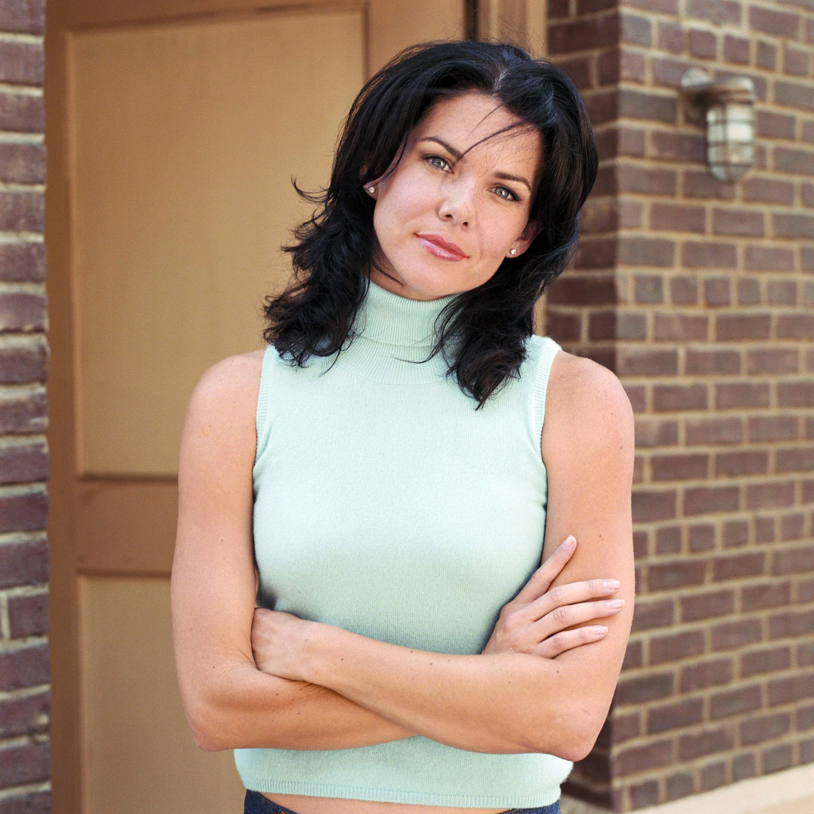
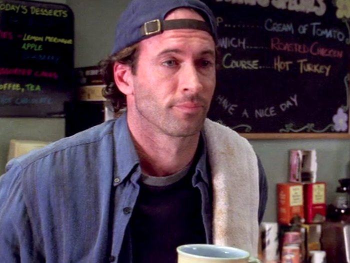

Lorelai Gilmore
Independiente y fan del café. Dueña de respuestas rápidas.
Rory Gilmore
Lectora, aplicada y curiosa. Su camino académico guía gran parte de la serie.
Luke Danes
Dueño del diner. Parco pero muy leal.
Independiente y fan del café. Dueña de respuestas rápidas.
Lectora, aplicada y curiosa. Su camino académico guía gran parte de la serie.
Dueño del diner. Parco pero muy leal.